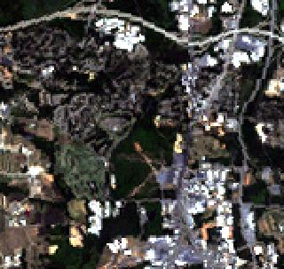
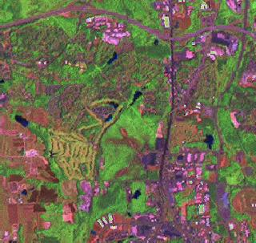

DN_b1
DN_fused = ------------------------------- * DN_pan
DN_b1 + DN_b2 + DN_b3
The assignment of the channels depends on the satellite.
The module's help text (above) suggests for LANDSAT-7, QuickBird and SPOT.
g.region rast=lsat7_2002_20 -p
# R, G, B composite at 28.5m
d.rgb b=lsat7_2002_10 g=lsat7_2002_20 r=lsat7_2002_30
# Brovey fusion
i.fusion.brovey -l ms1=lsat7_2002_20 ms2=lsat7_2002_40 \
ms3=lsat7_2002_50 pan=lsat7_2002_80 \
outputprefix=brovey
# display at 14.25m
g.region rast=brovey.blue -p
d.rgb b=brovey.blue g=brovey.green r=brovey.red
|

R, G, B composite of Landsat at 28.5m |

R, G, B composite of Landsat Brovey fusion at 14.25m |
Last changed: $Date$